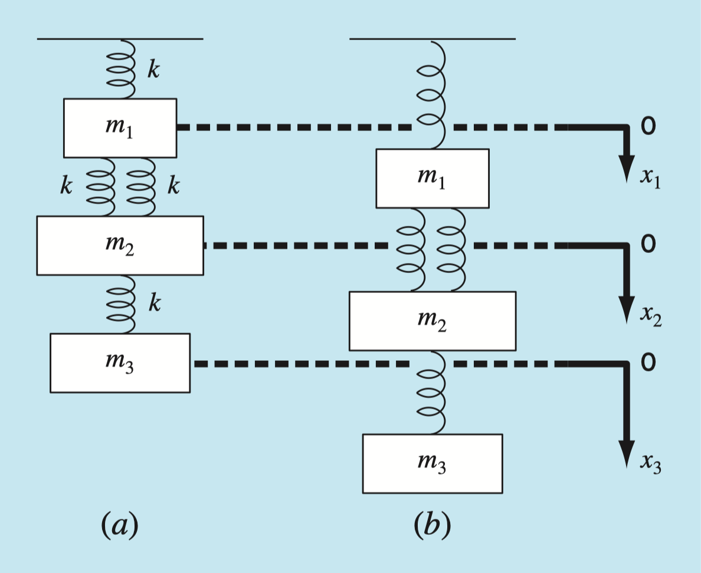
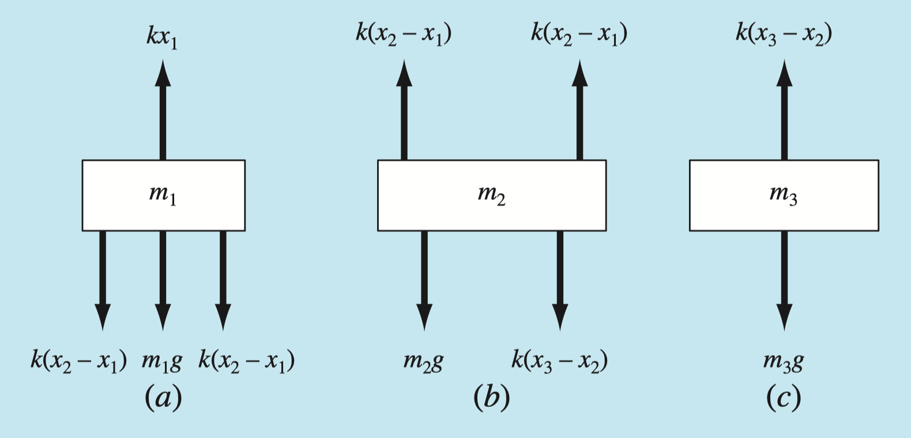

TME 310 - Computational Physical Modeling
University of Washington Tacoma
\[ x + 3y + 4z = 8\\ 4x - 2y + 8z = -4\\ -x + 4y + z = 12 \]
Solve for \(x\), \(y\), and \(z\)
We can solve any system of equations as long as…
In algebra, we learned different methods to solve for unknowns.
We’ll use matrices and concepts from linear algebra to get Python to solve systems of equations for us.
First, we need to put our system of equations into matrix form:
\[A\bf{x} = \bf{b}\]
\[ \begin{bmatrix} a_{11} & a_{12} & a_{13}\\ a_{21} & a_{22} & a_{23} \\ a_{31} & a_{32} & a_{33} \\ \end{bmatrix} \times \begin{bmatrix} x_{11}\\ x_{21}\\ x_{31}\\ \end{bmatrix} = \begin{bmatrix} b_{11}\\ b_{21}\\ b_{31}\\ \end{bmatrix} \]
\[ x + 3y + 4z = 8\\ 4x - 2y + 8z = -4\\ -x + 4y + z = 12 \]
\[ A= \begin{bmatrix} 1 & 3 & 4\\ 4 & -2 & 8 \\ -1 & 4 & 1 \\ \end{bmatrix} \]
\[ {\bf{x}} \to \begin{bmatrix} x\\ y\\ z\\ \end{bmatrix} \]
\[ {\bf{b}} \to \begin{bmatrix} 8\\ -4\\ 12\\ \end{bmatrix} \]
\[ x + 3y + 4z = 8\\ 4x - 2y + 8z = -4\\ -x + 4y + z = 12 \]
\[ \begin{bmatrix} 1 & 3 & 4\\ 4 & -2 & 8 \\ -1 & 4 & 1 \\ \end{bmatrix} \times \begin{bmatrix} x\\ y\\ z\\ \end{bmatrix} = \begin{bmatrix} 8\\ -4\\ 12\\ \end{bmatrix} \]
To solve for \(\bf{x}\), we “divide” both sides by \(A\) (i.e., multiply both sides by \(A^{-1}\)):
\[A{\bf{x}} = \bf{b}\]
\[A^{-1}A{\bf{x}} = A^{-1}\bf{b}\]
\[I{\bf{x}} = A^{-1}\bf{b}\]
\[{\bf{x}} = A^{-1}\bf{b}\]
--------------------------------------------------------------------------- ModuleNotFoundError Traceback (most recent call last) Cell In[1], line 1 ----> 1 import numpy as np 2 from scipy import linalg 3 A = np.array([ 4 [1, 3, 4], 5 [4, -2, 8], 6 [-1, -4, 1]]) ModuleNotFoundError: No module named 'numpy'
What about the requirement that the equations in our system are “linearly independent”?
--------------------------------------------------------------------------- NameError Traceback (most recent call last) Cell In[4], line 1 ----> 1 A = np.array([ 2 [1, 3, 4], 3 [4, -2, 8], 4 [8, -4, 16]]) 5 linalg.det(A) 6 # A is "singular" NameError: name 'np' is not defined

Given:
Find:
Assume the system is at-rest.
For each mass, \(\sum F = F_{up} - F_{down} = 0\)

Summing forces on each mass:
\[ \sum F = kx_1 - 2k(x_2 - x_1) - m_1 g = 0 \]
\[ \sum F = 2k(x_2 - x_1) - k(x_3 - x_2) - m_2 g = 0 \]
\[ \sum F = k(x_3 - x_2) - m_3 g = 0 \]
Let’s group items by the unknowns, \(x_1\), \(x_2\), and \(x_3\), and move the gravitational forces to the other side:
\[ \begin{matrix} 3kx_1 & - 2kx_2 & \ & = & m_1 g \\ -2kx_1 & + 2kx_2 &-kx_3& = & m_2 g \\ \ & - kx_2 &+ kx_3 &=& m_3g \end{matrix} \]
And then put the system of equations into the form \(A{\bf{x}} = \bf{b}\):
\[ \begin{matrix} 3kx_1 & - 2kx_2 & \ & = & m_1 g \\ -2kx_1 & + 2kx_2 &-kx_3& = & m_2 g \\ \ & - kx_2 &+ kx_3 &=& m_3g \end{matrix} \]
\[ A= \begin{bmatrix} 3k & -2k & 0\\ -2k & 2k & -k \\ 0 & -k & k \\ \end{bmatrix} \]
\[ {\bf{x}} \to \begin{bmatrix} x_1\\ x_2\\ x_3\\ \end{bmatrix} \]
\[ {\bf{b}} \to \begin{bmatrix} m_1g\\ m_2g\\ m_3g\\ \end{bmatrix} \]
--------------------------------------------------------------------------- NameError Traceback (most recent call last) Cell In[5], line 5 2 m1, m2, m3 = 2, 3, 2.5 # kg 3 g = 9.81 # m/s/s ----> 5 A = k * np.array([ 6 [3, -2, 0], 7 [-2, 3, -1], 8 [0, -1, 1]]) 9 b = [m1*g, m2*g, m3*g] 10 x = linalg.solve(A, b) NameError: name 'np' is not defined
--------------------------------------------------------------------------- NameError Traceback (most recent call last) Cell In[6], line 9 3 g = 9.81 # m/s/s 5 # alter A to remove any influence 6 # from the spring connecting m1 to 7 # the anchor point... no longer 8 # a statics problem! ----> 9 A = k * np.array([ 10 [0, -2, 0], 11 [0, 3, -1], 12 [0, -1, 1]]) 13 b = [m1*g, m2*g, m3*g] 14 x = linalg.solve(A, b) NameError: name 'np' is not defined